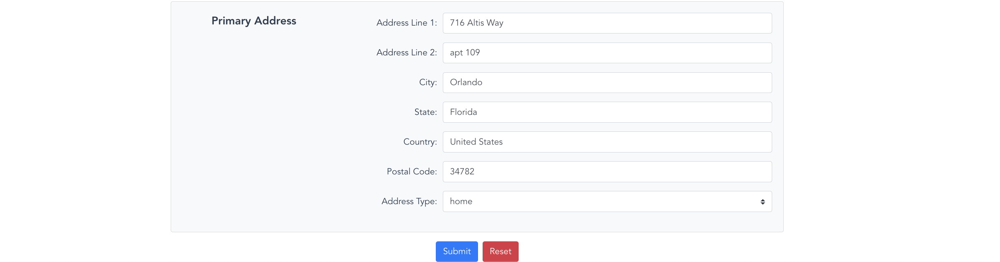
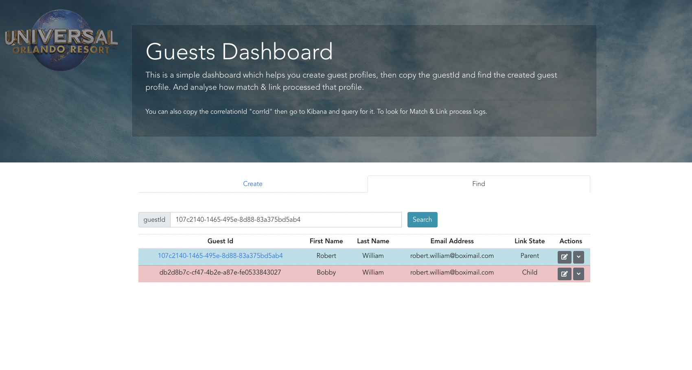
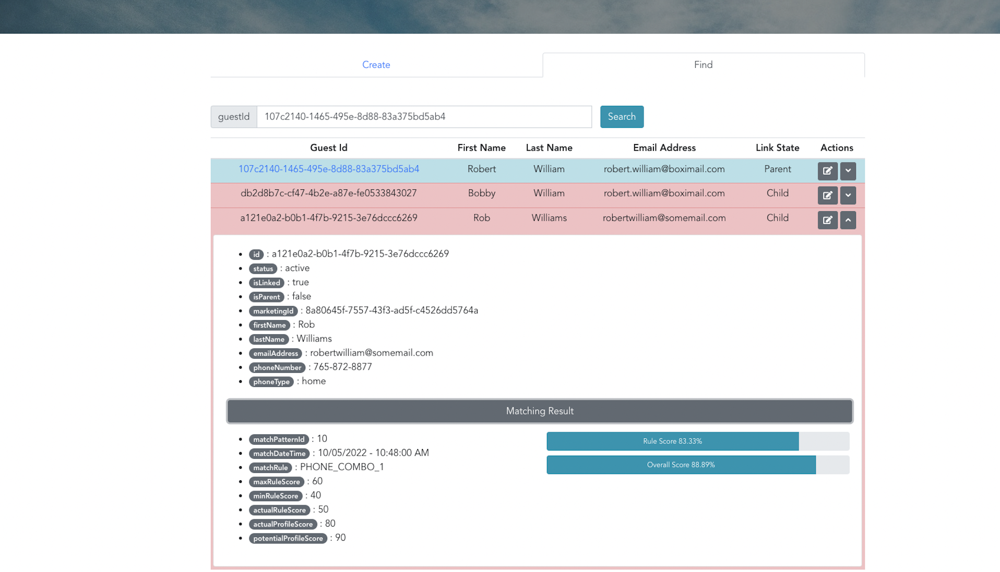

Match & Link Processor
Prepared by Kareem Aljabr
Introduction
At Universal Orlando Resort guests can have either a profile or an account.
A profile is created when you:
- Buy a ticket and checkout as a guest
- Book a hotel room and checkout as a guest
- Buy a ticket at the Theme Park gate
- Taking a survey in the park
- Sign up for emails
Introduction Count.
An account is created when you:
- Sign up using the website or mobile app
- Checkout as a guest then provide a password to create an account
- Click create account link in a Ticket confirmation email
What is Match & Link?
- Asynchronous process (worker)
- Consumes Kafka events produced by guest profile service.
- When a profile is created or updated it searches for a matching profile.
- If a matching profile is found, both profiles will be linked if one of the matching rules is achieved .
Core Concept - Scenario 1
Core Concept - Scenario 2
Core Concept - Scenario 3
History ⏳
Existing Node.js microservice, ms-guest, used to proxy SOAP requests to an IBM MDM AE.
IBM InfoSphere MDM AE : IBM InfoSphere Master Data Management Advanced Edition
Issues
- written by a team of developers from IBM, whose contracts were terminated.
- Lack of documentation.
- Difficult to maintain due to low unit test coverage. And lack of integration tests.
- Loose API contracts
- Multiple endpoints with the same functionality.
- DB models CRUD operations endpoints exposed.
Issues Cont.
- Many performance issues in production.
- Synchronous Match & Merge
- Poor design. An unregistered guest profile is created whenever you land on the website.
- Resulted in creating 100 millions of ghost profiles.
- IBM support contract is too expensive.
Existing Solution Revamp
Component Diagram Stages
- Existing Architecture
- Suggested Architecture
- Proxy existing service to new service
- Introducing Kafka
Existing Architecture
Suggested Architecture
Proxy to New Service
Component Diagram - Kafka
Sequence Diagram - Initial
Guests Service Performance Issues
I noticed high CPU and Memory Usage in Guests Service when Match & Link processor was launched
- Due to high number of search matching profiles calls.
- I redesigned the solution to add a read only DB replica.
Sequence Diagram - Read DB
Guests Dashboard
I created a UI Dashboard to help both QA and Business teams test and validate the Match & Link process.
Create a Profile

Select an Alternative Name
Select available Alternative name for the given first name to test fuzzy matching
Primary Address
Primary address details to validate address matching rules View Created Profile
Orphan Profile
Orphan profile, is a profile with no links to other profiles
Validate Match & Link
Validate Match & Link
Two profiles are linked, forming a parent child relationship Validate Match & Link Cont.
Multiple child profiles linked to the same parent profile.Validate Match & Link Cont.
Expand any profile for more details
Validate Match & Link Cont.
Child profiles have more details about the matching result.
Validate Match & Link Cont.
Validate Match & Link Cont.
Update profile to trigger match & link on update eventDeployment
Existing CI/CD pipeline was built using IBM Urbancode tools
- Auto-scaling was not an option. There is manual work involved to create a new instance.
- All CI/CD configurations were managed by Devops team. Nothing was accessible to developers.
Existing Deployment Diagram
Future Enhancements
Debezium
- Debezium continuously monitors your databases and lets any of your applications stream every row-level change in the same order they were committed to the database.
- Debezium is built on top of Apache Kafka, which is proven, scalable, and handles very large volumes of data very quickly.
Future Enhancements
In-Memory Cache
- Use In-Memory Cache to mitigate the load on DB.
- Amazon ElastiCache supports the Memcached and Redis cache engines. For simple data models we can go for memcached. Redis handles complex data types and many other features.
Move to AWS